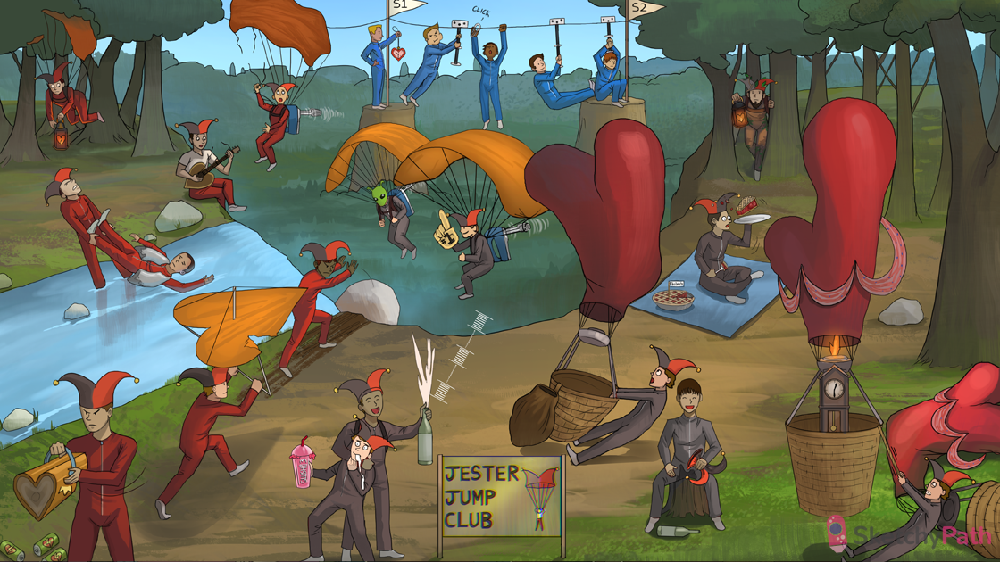

Regurgitating bicuspid jester hat: mitral regurgitation
Parasailing jester with #1 finger: mitral valve prolapse is the number one cause of mitral regurgitation
Mixer on the parasailer: myxomatous degeneration (pathologic deterioration of connective tissue) causes mitral valve prolapse
broken heart string: acute mitral regurgitation can be caused by papillary muscle rupture following MI
Strings broken on paraglider: myxomatous degeneration can cause chordae tendinae rupture and acute mitral regurgitation
Flame in heart lantern: infective endocarditis can damage the chordae tendinae → rupture and acute mitral regurgitation
Broken heart flashlight: acute mitral regurgitation decreases forward stroke volume → acute drop in cardiac output
Pulling load: acute mitral regurgitation increases left ventricular end diastolic volume and PRELOAD
Wet life vest: acute mitral regurgitation can cause pulmonary venous hypertension and flash pulmonary edema
Pushing load: acute mitral regurgitation causes a second low-resistance outlet for the ventricle → decreased afterload
Raised heart fraction: the decreased afterload in acute mitral regurgitation leads to an increased ejection fraction (but lower forward stroke volume)
Falling lightning bolt batteries: acute mitral valve regurgitation can cause severe hypotension and cardiogenic shock
Rhubarb pie: acute rheumatic fever causes valvulitis → mitral regurgitation
Flame in heart lantern: infective endocarditis can cause vegetations to form on the mitral valve → mitral regurgitation
Floppy heart balloon: heart failure can cause dilation of the left heart chambers and mitral annulus → functional mitral regurgitation (can be reversible)
Dilated heart bag: dilated cardiomyopathy can stretch the mitral annulus → mitral regurgitation
Chronic grandfather clock in the dilated balloon: chronic mitral regurgitation allows for the left atrium dilation and hypertrophy → less pressure transmitted to pulmonary circuit (no significant pulmonary edema)
Raised fraction: an increased ejection fraction maintains cardiac output in chronic compensated mitral regurgitation
Pulling load: chronic mitral regurgitation causes a chronically elevated preload in the left ventricle
Eccentric myocardial ribbon: chronically increased preload in chronic mitral regurgitation causes eccentric hypertrophy of the left ventricle
Failing heart balloon: chronic mitral regurgitation can progress to decompensated congestive heart failure
Murmur from systolic spray: mitral regurgitation presents with a blowing, holosystolic murmur
Jester in armpit: the systolic murmur of mitral regurgitation is heard best over the cardiac apex with radiation to the axilla
Hologram: the murmur of mitral regurgitation is holosystolic
Sloshing Slushi3: dilation of the left ventricle with chronic mitral regurgitation can cause an S3 heart sound
Wet crotch closing bicuspid hat: functional mitral regurgitation (due to acute left ventricular volume overload) can be corrected with diuresis (decreased murmur)
Martian with mixer: connective tissue diseases such as Marfan syndrome, osteogenesis imperfecta, and Ehlers-Danlos can cause mitral valve prolapse (due to myxomatous degeneration)
Clicking carabiner between S1 and S2: mitral valve prolapse presents with a mid-systolic click (sudden tensing of the chordae as valve leaflets prolapse) between the S1 and S2 heartsounds
Straining next to S1: maneuvers that decrease preload (e.g. Valsalva) cause the mid-systolic click in MVP to move closer S1
Elevated heart watch next to S1: Tachycardia (decreases the diastolic filling time and preload) will cause the mid-systolic click in MVP to move closer to S1
Propping legs up next to S2: maneuvers that increase preload (e.g. straight leg raise) cause the mid-systolic click in MVP to move closer to S2
Squatting next to S2: maneuvers that increase preload (e.g. squatting) cause the mid-systolic click in MVP to move closer to S2
Sustained grip next to S2: maneuvers that increase afterload (e.g. sustained hand grip) cause the mid-systolic click in MVP to move closer to S2